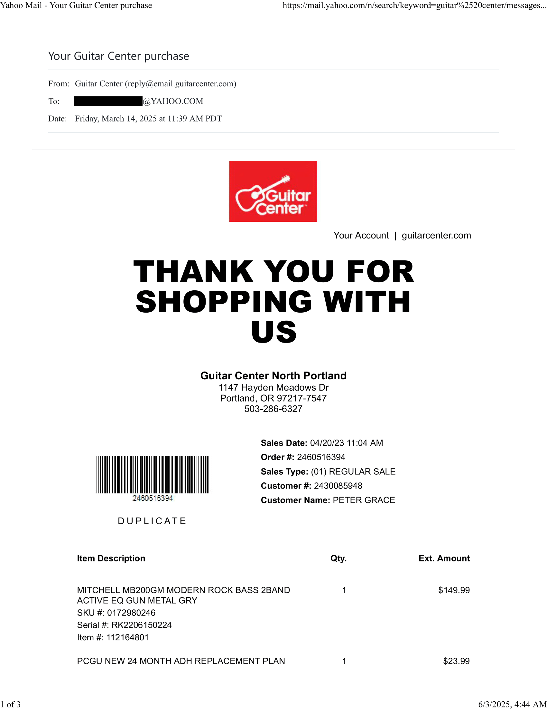

Fuck Her Pants
The following is a mere footnote to "the incident".
On Wednesday April 30 2025, one of my supervisors whom I had been aquainted with for several years prior to meeting G (aka "the woman") and who met G through me at the Yamhill Pub, told me that G told him a few days prior that she sued me in small claims court because I stole a pair of her pants, a jacket, and her bass guitar.
The absurdity of her statement is on a par with the irony of it considering that the day he told me this was the very day the judgment against her was entered.
The trajectory of her pants I've already documented.The bass guitar is another story.
Hypothetically, if one hears that Joe and Sally broke up and Sally sued Joe because Joe stole Sally's guitar (among other things), one would make certain assumptions.
Namely, that
- Sally broke up with Joe (probably because he was a shithead);
- Sally either owned the guitar before they got together, or aquired it while they were together; and
- Joe took it wrongfully.
If that's all one knew about the situation, one would be justified in coming to the conclusion that Joe's a bad guy and should be subject to punishment whether social, legal, corporal, or capital.
If that's all one knew...
But, like it or not, there's always two sides to every controversy.
Here's a real world example:
On April 20 2023, I snapped at G over the phone while she was at work. I don't remember why exactly (probably hungover and impatient), but I felt so guilty that I went to Guitar Center and bought her a bass guitar, a guitar strap, and a guitar stand. Well, to be honest, I bought us a bass guitar.
She swooned when she got home from work and saw it.
Over the course of a year and a half—particularly on the downhill slope of our relationship—it just became another piece of furniture in our bedroom. Another dusty relic of stale romance. Which is why, I'm quite certain, that she gave it away along with the rest of my belongings because she never played it and she didn't want any reminders of my generosity.
It was a gift anyway, and I had no intention of taking it when I moved out regardless of the circumstances of our breakup.
The jacket, I would imagine, exited the apartment in the same fashion. She had several. One of which I wore occassionally. Again, no reminders.
But fuck her pants.
Catharsis is its own reward.
